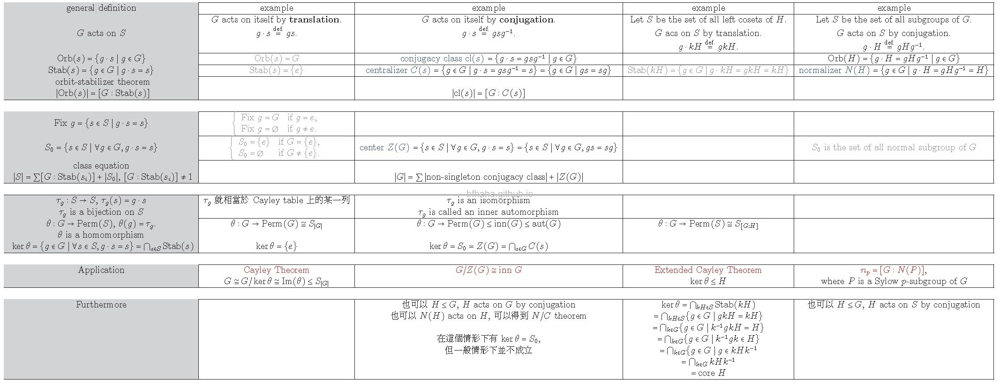

group action替數學家們對group的研究開闢了一番新天地。如下表中紅色字體標示的定理，雖然看似沒什麼關係，但他們卻可以藉由不同的group action，依循相同的模式推導出來。
下面這四個最基本的group action看似很難記，但其實就只有conjugation及translation兩種，而作用在the set of all subgroup上不可能用translation，因為 \(gH\) 不一定是subgroup；作用在the set of all left cosets上不可能用conjugation，因為 \(gaHg^{-1}\) 不一定是left coset， 所以基本上不會搞混這幾種group action所作用的對象。
